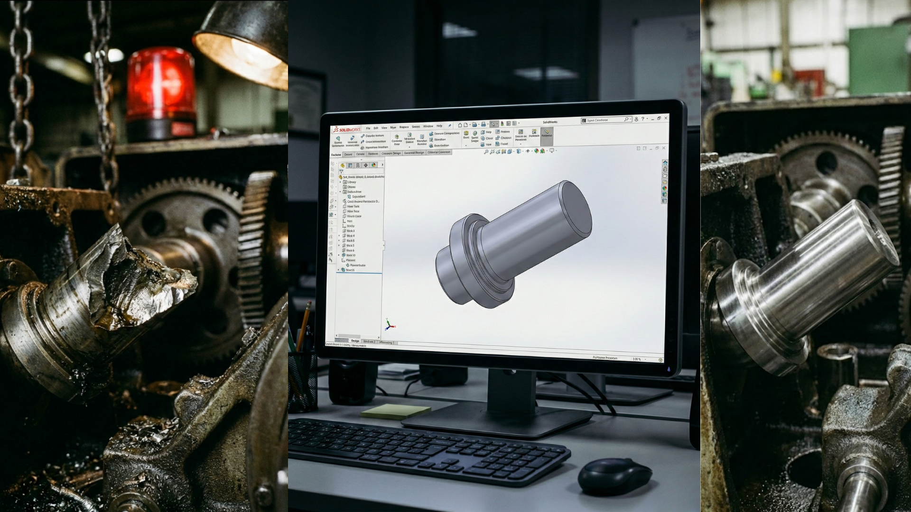

Ingeniería Inversa y Stock Digital
Asegura la continuidad de tu negocio. Convierte tus recambios críticos en archivos digitales y fabrícalos solo cuando los necesites.
Tu Almacén, Ahora en la Nube
El mantenimiento industrial eficiente ya no depende de estanterías llenas de recambios que quizás nunca uses. La ingeniería inversa nos permite digitalizar piezas físicas para crear tu propio Stock Digital.
Olvídate de esperar semanas por un repuesto original o descubrir que está descatalogado.
- Elimina la Obsolescencia: Recuperamos piezas que ya no se fabrican.
- Reduce Costes de Almacenaje: Guarda archivos, no cajas.
- Respuesta Inmediata: Del archivo a la pieza física en horas.
- Mejora Continua: Optimizamos el diseño original para corregir fallos recurrentes.

Escaneo y Digitalización
Tomamos tu pieza física y capturamos su geometría exacta con precisión metrológica para generar un modelo 3D fiel.
Reconstrucción CAD
Convertimos la nube de puntos en un archivo CAD paramétrico editable (STEP), listo para ser modificado o mejorado.
Fabricación a Demanda
Tu pieza queda archivada en tu inventario digital. Cuando la necesites, activamos la producción inmediata.
¿Tienes máquinas paradas por piezas que ya no existen?
No arriesgues tu producción. Envíanos la pieza rota o desgastada y creamos su gemelo digital para que siempre tengas repuesto.
Consultar caso particular